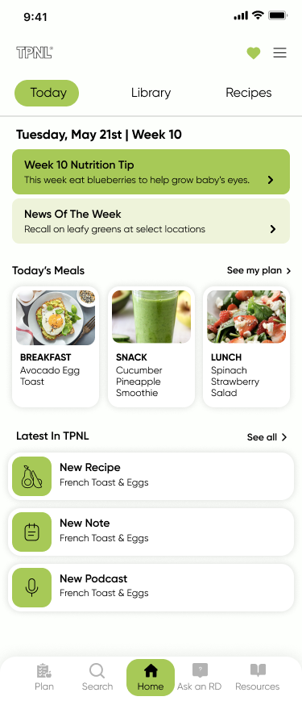
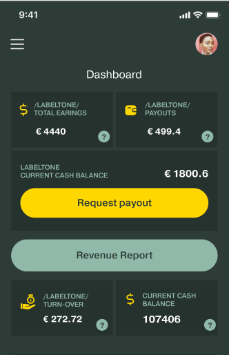
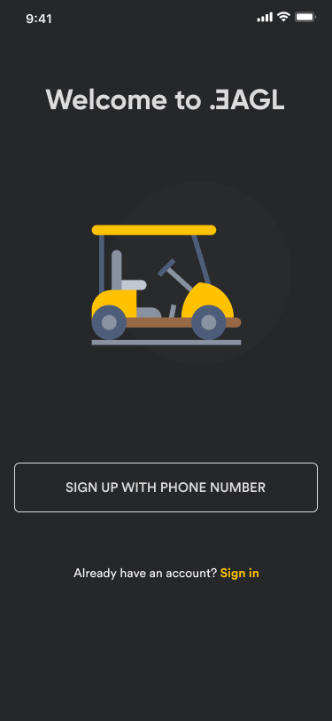
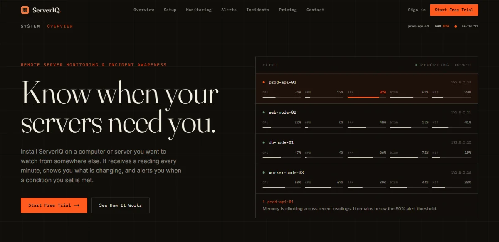

Illustration of the process: evidence is gathered, patterns are found in it, it is narrowed to one clear problem, a solution is structured as a flow, the interface is designed, and the result is a finished product experience.
UX / UI & Product Design · 10+ Years
I make complex products clear.
I don’t start with the design. I start by understanding the problem, finding what matters, and shaping the experience around it.
Four products.
Four kinds of complexity.
Different products, different constraints, the same job underneath: making complex decisions easier.
-
01 · ChartVPSFinTech
 ChartVPS
Trading infrastructure turned into a product experience — from understanding performance to choosing the right plan.
Open project Web · Product
ChartVPS
Trading infrastructure turned into a product experience — from understanding performance to choosing the right plan.
Open project Web · Product
-
02 · TPNLHealth

TPNL A dense reference library that has to stay calm while someone looks for one answer. Open project Mobile · Android · iOS -
03 · LabelCasterMusic

LabelCaster A complex music distribution workflow, structured from release creation through delivery. Open project Web · iOS · Android -
04 · EaglRental

Eagl A mobile booking experience designed for a decision that happens in the real world, often with one hand and little time. Open project Mobile · Android
I don’t start with pixels.
Most of the work happens before the pixels: understanding the problem, finding the structure, and making the important decisions clear.
-
01
Evidence
Gather what is known before forming a view: user evidence, product data, business context and constraints.
OutputEvidence map
-
02
Understand
Turn evidence into patterns: where people hesitate, what breaks down, and what the product is asking them to figure out.
OutputPatterns & friction
-
03
Define
Narrow it to the one problem worth solving, stated plainly enough that everyone agrees on it.
OutputProblem statement
-
04
Structure
Shape the experience before styling it: information architecture, flows, hierarchy and the rules the system follows.
OutputFlows & architecture
-
05
Design
Give the structure a form — hierarchy, interaction, type and interface, in that order.
OutputInterface & system
-
06
Outcome
See what changed: what became easier, what became clearer, and what the product gained from the work.
OutputProduct outcome
How I use AI in design
I design and build directly with AI, with no Figma stage. I use Claude Code to build, and both ChatGPT and Claude for information architecture, design and review. I use two tools so each one can check the other’s work and I can confirm nothing is wrong. AI is fast, but it doesn’t have taste, so I stay in charge of the structure.
| Stage | Tools | What I decide |
|---|---|---|
| Information architecture | ChatGPT and Claude | Which sections exist, and in what order |
| Design | ChatGPT and Claude | The layout of every section |
| Build | Claude Code | How each section must be laid out, specified one by one |
| Review | ChatGPT and Claude, checking each other | Whether it’s right, and what to fix |
| Testing | ChatGPT and Claude | What passes, and what gets fixed before it ships |
-

ServerIQserveriq.io A server monitoring product. Designed, written and built with AI and no Figma. I did the design, copy and build. (opens in a new tab) - Nitrodenitrode.io A corporate site for a group of finance and compute brands. Built the same way. I did the design, copy and build. (opens in a new tab)
What I learned
AI repeats itself. Left alone, it gave me the same layout for every section and every page, so the sites came out looking identical and generic. To get variety and a clear hierarchy, I had to describe exactly how each section should be laid out: what goes where, and why. The direction was mine, and AI did the execution.
The space between how something works and how it feels to use.
10+ years across UX, UI, visual design and digital products — usually working where technology, information and complex decisions meet.
My work started in visual craft and gradually moved toward structure: deciding how a product should be organised before it is drawn, and building the systems that keep it consistent once it ships.
digital products
- 01Visual designForm, type and visual hierarchy.
- 02UIInterfaces, states and interaction detail.
- 03UXFlows, information and how people move through them.
- 04ProductWhat gets built, and why.
- 05SystemsPatterns that keep products coherent as they grow.
What I work on
- Product
- Flows, information architecture, interaction design, prototyping.
- UX
- Research, structure, usability and the way information supports decisions.
- UI
- Typography, visual systems, responsive layout, interaction detail.
- Systems
- Components, patterns, tokens, interfaces that scale past one screen.
- Web
- Product websites, marketing experiences and implementation-aware design.